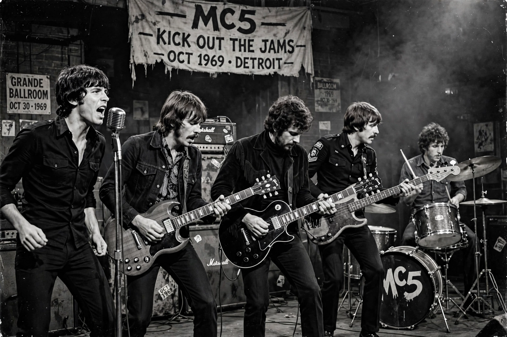

| Origin | Detroit, Michigan, US |
|---|---|
| Genres | Proto-punk, hard rock, garage rock |
| Years active | 1963–1972; reunions thereafter |
| Members (classic) | Rob Tyner, Wayne Kramer, Fred 'Sonic' Smith, Michael Davis, Dennis Thompson |
MC5 was an American rock band formed in Detroit in 1963. Short for Motor City Five, they are regarded as pioneers of punk and hard rock for their loud, energetic, politically charged performances.
Managed by John Sinclair and house band of the Grande Ballroom, they performed at the protests outside the 1968 Democratic National Convention in Chicago. Their debut album Kick Out the Jams (1969), recorded live, reached controversy for its title track's profanity. Back in the USA (1970) and High Time (1971) followed to critical praise but weak sales; the band broke up in 1972 amid drug and label problems.
MC5 influenced punk, metal and alternative rock. They were inducted into the Rock and Roll Hall of Fame in 2024. Guitarist Fred 'Sonic' Smith later married Patti Smith.